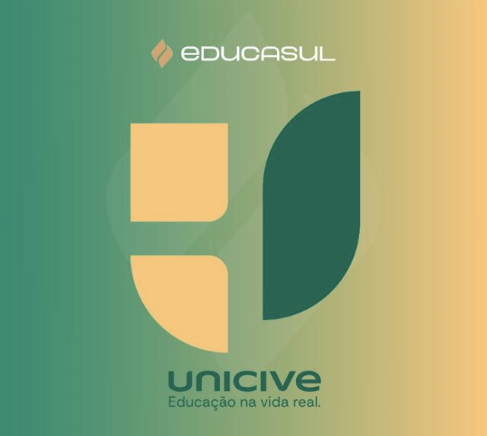
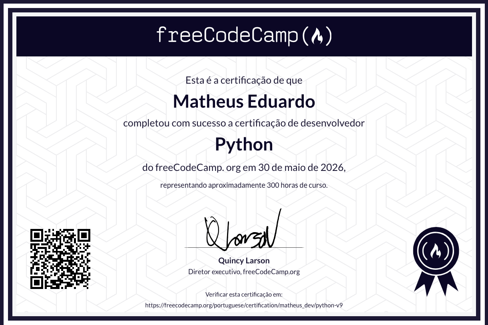

SOBRE
Sou Matheus Eduardo, desenvolvedor Back-End em constante evolução. Combino a graduação na UNICIVE com cursos especializados em Python, SQL e automação com IA, focado em construir soluções inteligentes, práticas e organizadas.

Projetos que desenvolvi aplicando na prática produto, experiência do usuário, arquitetura e tecnologia para criar soluções completas.
IA para previsão de score de crédito. Análise de dados com Pandas, treinamento de modelos com Scikit-learn (Random Forest com 83% de acurácia) e automação de previsões para novos clientes.
O navegador manda um pedido, meu código lê, processa e devolve a página. Sem mágica, sem abstração. Servidor HTTP construído do zero em Python puro.
Banco de dados chave-valor com formato binário próprio (cabeçalho MINIDB01) inspirado no SQLite. CLI interativa com indicador de alterações pendentes e interface web em Flask, ambas compartilhando o mesmo arquivo .db.
Scripts para automação de tarefas repetitivas, otimizando processos e aumentando produtividade no dia a dia.
Automação de curtidas no TikTok utilizando PyAutoGUI para simular interações e otimizar engajamento de forma automática.
Você cola a URL do vídeo e recebe um resumo estruturado com pontos principais. Integração com Claude API para análise inteligente do conteúdo.
Visualização animada do algoritmo Insertion Sort com divisor entre a parte ordenada e a não-ordenada, controle de velocidade, beeps de áudio e o código Python acompanhando linha por linha. Viralizou no LinkedIn com mais de 1.400 reações.
Histórico profissional, formação acadêmica e tecnologias dominadas em um só documento. Baixe ou visualize abaixo.
Versão completa do currículo com experiências, projetos e stack técnica detalhada.
Certificações que comprovam o aprendizado contínuo e o domínio das tecnologias que aplico nos projetos.
Certificação Python pela freeCodeCamp — a mais importante do meu plano de estudos. Concluída em 30 de maio de 2026, representando cerca de 300 horas de curso.
Python Developer Certification
Se quiser trocar ideia sobre desenvolvimento web, automações ou uma oportunidade profissional, fale comigo pelos canais abaixo.